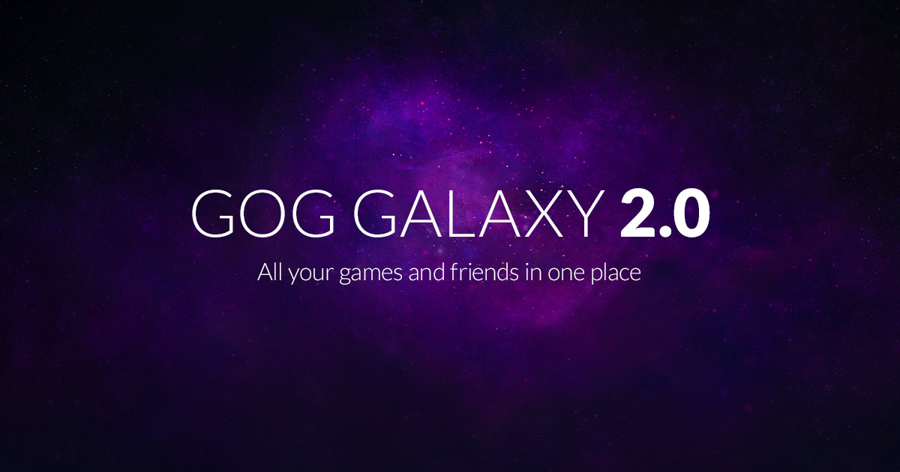

GOG Extension

Cross-platform services that make it easier and faster for developers to successfully launch, operate, and scale high-quality games. See the official page for more documentation.
Setup
Follow these guides to get yourself going on everything you need for your new game.
Modules
This extension API presents a variety of modules that can be used to push your game to the next level. These are the included modules: